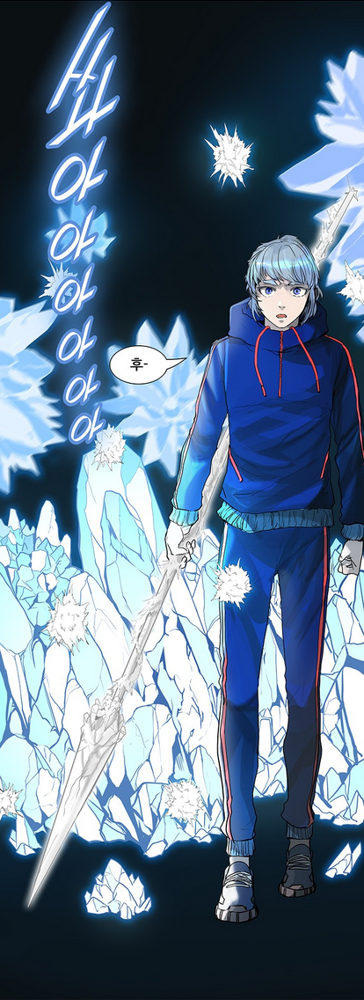

tower of god
Twenty-fifth night (Jubiole Grace) Position: Surf, Angler It is twenty-fifth night, and the name is twenty-fifth night. The position is a wave. There is a word of genius wave. It took two years for others to make one room, because the child completed one room in two weeks. There are many rooms. Because it is unqualified personnel, talent and ability are much better than other screening personnel. The feature is that once you get the technology you can do almost everything. It was night, but because of special work, my head became longer and I got two names. The second name is Viola. It is a name that was later made known as the son of Arlen Grace. (Full name is Juubiole Grace) When Jubiole Grace was a candidate for Slug in Pug, then hectic rumor flourished, but it was buried for a while in the good character of the night. He has justice and is a responsible person who hates to be hurt by oneself. A child who can be seen as good, who loves a lot of friends, and who wants to keep and protect them. It seems that a friend is very much precious for the night because it is a child who has often separated from friends. There is a rumor that he was a Slugger of Pug because he hated his friend. I do not want to break up with someone, I want to be strong, and I have actually become quite strong recently. Couples include Endorse, Ewha, Yuri, Hwangryun, and Kuhn. I hate finite. I am able to deal with more than 8 rooms from hell train 2, and it is not exaggeration to say that it is D class 1. The reason for this remarkable reason was that she was a child born between Allan and V, a woman she loved and another unclassified person.Kun Agero Agnes Position: Lighthouse Keeper [2], Kageji no.2. Kuhn is very handsome, well-dressed, and has good hair and is popular. The thought is sharp and quirky, and since there is no such thing as a scam in front of Kuhn, it is called "fraudulent" among the readers. His personality is cool and ridiculous, but he only shows affection to the night. There is a dark past due to the power struggle of Kun's family. I betrayed my mother-in-law and my mother and called my sister-in-law, Kun Marija Hard, a prisoner of Jahad and a child who forsaken herself. He came to the Tower of God from very early days, and at first he approached a rather impure purpose, but now he saves the night more than anyone. In Kun's house, it is quite strong, and even on the artist's blog, it is contrasted with the mention of a child who was abandoned. The position is lighthouse, but I discovered the talent as a storehouse on the hell train - kun ed inside. It is expected to change the position later on.

Lack Recreation Position: Changji It is the twenty-fifth night we met at the floor of the examination and a member of the Kun Agero Agnis, a former tribe who lived in the tower from the beginning. Often referred to as 'crocodiles' because of the appearance of a huge crocodile. It is an unusual character that makes people realize by simple actions even though it is not suitable for big size and there are many temperament which is simple, At first, I refused to go to the night with Kuhn, but since then I have been feeling a strong camaraderie and have been saving two people. I am very cherished by the night and because I have a personality that goes out of my mind first rather than thinking, I am very friendly with the careful Kuhn, Is it hard to memorize names? People are nicknamed '~ turtles' according to their external characteristics [3]. The only person who does not call it a turtle is Endorisha Hardo, sometimes called a tortoise, but it is often called a ghost. At the level of the exam, they act as a compactor [4] from the consideration of the manager, not the consideration. I got a Mad Shocker in the stadium. A descendant of a native circle known to have been extinct, the attribute is a stone